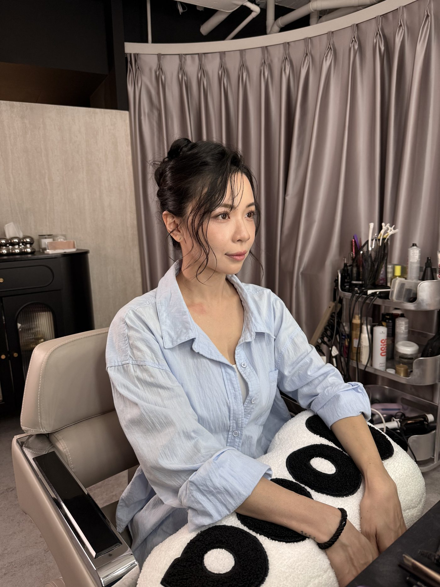

想像明天早上有一場決定性的簡報：對方是你追了半年的客戶，或是決定你下一輪資金的投資人。你會提前一週改簡報、前一晚排練到深夜，但明天早上出門前的那張臉，多數人交給運氣：睡眠不足的氣色、自己抓的頭髮、和平常一樣的妝。商務妝髮，就是把「出門前的那兩個小時」從運氣變成設計：標準服務時間約 120 分鐘，在重要場合開始之前，讓一位專業者把膚況、輪廓與持妝一次整理到位。
商務妝髮是為簡報、採訪、拍攝這類近距離、長時間的場合做的：重點放在遮疲態、保留皮膚質地，以及在會議室或鏡頭的燈光下看起來狀態很好，而不是妝感明顯。標準服務時間約 120 分鐘。
「好看」與「工作場合合用」是兩套手法
日常妝髮的目標是好看，色彩可以玩、風格可以強，重點是你喜歡。商務妝髮處理的是工作場合下的條件，在視覺上有具體的成分：氣色、整齊，以及妝面的質地。近距離與鏡頭下的妝感如果太重，容易讓人先注意到妝本身。
所以 B.room 在商務妝髮中主要處理三件事：遮疲態（黑眼圈、暗沉、熬夜的證據，這些是狀態雜訊，不是你）、留質地（皮膚的真實質感保留，才不會在近距離與鏡頭下顯得面具感）、收得剛好（做完之後，別人只覺得你今天狀態真好，說不出你做了什麼）。這與我們在〈為什麼自然需要設計〉談的是同一門工藝：最高級的修飾，是看不出修飾。
商務妝髮做得好的時候，別人注意到的是你的狀態，不是你的妝。
什麼場合值得安排一次
| 場合 | 為什麼值得 |
|---|---|
| 決定性簡報／提案 | 高壓下的疲態最誠實，而對方正在評估「這個人可不可靠」 |
| 面試／董事會／談判 | 近距離、長時間被注視，細節全都看得到 |
| 媒體採訪／錄影／直播 | 鏡頭放大一切，油光與暗沉在螢幕上加倍（參考〈視訊鏡頭裡的你〉） |
| 形象照拍攝 | 照片要用兩三年，妝髮是它的地基（見〈妝髮：多濃、多正式〉） |
| 重要典禮與正式晚宴 | 介於商務與活動之間，依場合燈光調整配比 |
共同點：這些場合多半準備了很久，而妝髮是行程當天還能調整的少數項目之一。

男士商務妝髮：常見的處理項目
男士商務妝髮通常以膚色與膚況整理、眉型、髮型輪廓與控油為主，目標是維持自然、整齊且適合場合的狀態。氣色處理的是把疲態調勻而不是上妝；眉型影響表情的明確度；髮型輪廓與控油則在鏡頭與強光下差別最明顯。
需要與否依場合與本人狀態決定；上台、上鏡與被拍頻率高的人，通常比較容易感受到差別。上台、上鏡頻率高的人，通常會把出場前的整理排進固定流程。
常見問題
商務妝髮和日常妝髮，時間和流程差在哪？+
日常妝髮標準服務時間約 90 分鐘，依你的狀態、當天服裝與喜好完成。商務妝髮約 120 分鐘，多出來的時間不是做得比較慢，是先確認場合：對象是誰、距離多遠、有沒有鏡頭、要撐多久，然後把時間集中在氣色、持妝結構與髮型細節上，而不是色彩與風格的嘗試。分類邏輯見〈日常妝髮、商務妝髮、活動妝髮差在哪〉。
可以到公司或會議地點服務嗎？時間怎麼抓？+
可以，商務場合的時間壓力本來就適合到點服務，實際的到點範圍與交通在預約時確認。抓時間的方式是從正式行程往前回推：服務本身約 120 分鐘，再往前留一段著裝與微調的緩衝。把正式開始的時間告訴我們，造型師會回推適合的開始時間；若當天有多個行程，預約時給我們全程時間表，我們會設計能跨場合的持妝結構與快速調整方案。
我平常自己會化妝，重要場合有必要找專業嗎？+
日常妝與商務場合妝的差異在於條件：會議室的燈、鏡頭的解析度、長時間不方便補妝，以及緊張時的出油與脫妝，這些都不是日常妝的設計前提。平常自己化得穩定的人，遇到這幾個條件同時出現時，再考慮交給專業處理。